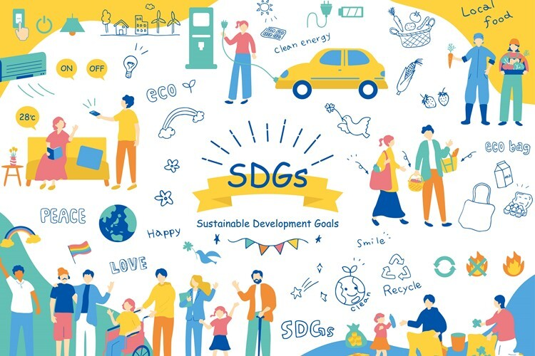
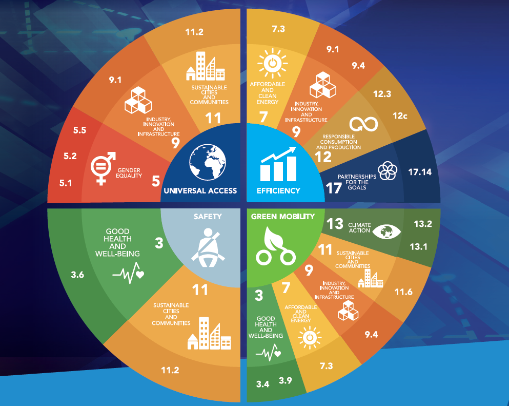
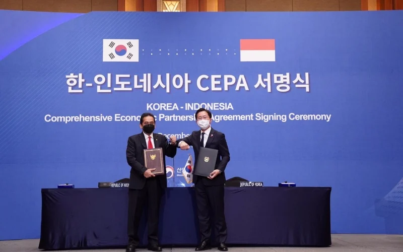
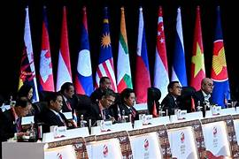

.png)
Halo nama saya Quenkelly Patrisha Ameintine Sihombing dari kelas 94/26👋🏻
Selamat datang di website saya! Dari web ini kalian dapat memahami hubungan kerjasama Indonesia dengan negara lain yang bertujuan untuk mewujudkan kesejahteraan masyarakat dalam negara yang terlibat dalam kerja sama itu. Selain itu, kalian dapat menelusuri macam-macam kerjasama internasional serta informasi terkait SDGs. Melalui kerjasama, kesejahteraan masyarakat dapat meningkat seperti dalam bidang pendidikan, kesehatan, ekonomi, dan budaya.
SDGs Dikutip dari Baperlitbang Banjarnegara, SDGs merupakan bentuk tindak lanjut dari kesepakatan global sebelumnya yaitu MDGs atau Millennium Development Goals. Pada bulan September tahun 2015, Perserikatan Bangsa-Bangsa (PBB) kemudian meluncurkan SDGs yang menjadi pendorong utama penyusunan agenda pembangunan pasca. Jadi, SDGs adalah serangkaian tujuan yang ditetapkan oleh Perserikatan Bangsa-Bangsa (PBB) untuk mencapai kehidupan yang lebih baik dan lebih berkelanjutan bagi semua manusia. SDGs. Adapun 17 tujuan SDGs yang saling terkait dan saling mendukung untuk mengatasi berbagai tantangan global yang kita hadapi.
SDGS memiliki 17 tujuan utama berupa: Tanpa kemiskinan, Tanpa kelaparan, Kehidupan sehat dan sejahtera, Pendidikan berkualitas, Kesetaraan gender, Air bersih dan sanitasi layak, Energi bersih dan terjangkau, Pekerjaan layak dan pertumbuhan ekonomi , Industri, inovasi, dan infrastruktur ,Berkurangnya kesenjangan, Kota dan permukiman yang berkelanjutan, Konsumsi dan produksi yang bertanggung jawab, Penanganan perubahan iklim, Ekosistem lautan, Ekosistem daratan, Perdamaian, keadilan dan kelembagaan yang tangguh, dan Kemitraan untuk mencapai tujuan
Tujuan Pembangunan Berkelanjutan (SDGs) 2 adalah “Menghilangkan kelaparan, mencapai ketahanan pangan dan gizi yang baik, serta meningkatkan pertanian berkelanjutan.” Tujuan ini sangat penting bagi Indonesia, yang merupakan negara dengan jumlah penduduk terbesar keempat di dunia. Menurut data Badan Pusat Statistik (BPS), prevalensi penduduk Indonesia yang mengalami kekurangan gizi (stunting) pada tahun 2022 adalah 24,4%. Angka ini masih di atas target SDGs 2, yaitu 14% pada tahun 2030. Selain itu, Indonesia juga menghadapi tantangan dalam hal ketahanan pangan. Menurut laporan Food and Agriculture Organization of the United Nations (FAO), Indonesia merupakan salah satu negara yang paling rentan terhadap krisis pangan. Hal ini disebabkan oleh berbagai faktor, seperti perubahan iklim, ketidakstabilan politik, dan keterbatasan sumber daya alam.

Pada gambar di atas menunjukkan bahwa Indonesia masih lebih baik dibandingkan dengan skor indeks kelaparanLaos dan Timor Leste, namun lebih tinggi dibandingkan Thailand, Malaysia, Vietnam, Philipina, Kamboja, dan Myanmar. Salah satu indikatornya adalah masalah stunting yang masih tergolong tinggi.
Untuk mengatasi tantangan-tantangan tersebut, Indonesia perlu mengambil langkah-langkah strategis untuk mencapai SDGs 2. Berikut adalah beberapa strategi yang dapat diambil untuk mencapai SDGs 2 di Indonesia:
1. Meningkatkan produktivitas pertanian Produktivitas pertanian perlu ditingkatkan untuk memenuhi kebutuhan pangan yang ada di Indonesia. Hal ini juga dapat diterapkan dengan menggunakan teknologi pertanian modern yang membantu meningkatkan efektivitas produktivitas pertanian. Edukasi pasca panen juga dibutuhkan agar tidak terjadi kerugian pada hasil panen. Apabila pengelolaan saat pasca panen dilakukan dengan baik dan sesuai dengan GAP (Good Agriculture Practice) pasca panen, tentu akan mengurangi persentase kerugiannya. Sehingga dapat membantu menunjang kebutuhan pangan yang meningkat setiap harinya.
2. Meningkatkan akses masyarakat terhadap pangan Peningkatan akses masyarakat terhadap pangan juga penting terutama pada daerah-daerah dengan angka kelaparan tinggi. Masyarakat pada daerah-daerah tersebut memerlukan perhatian lebih terutama dalam hal kebutuhan pangan mereka. Hal ini dapat dilakukan dengan mengembangkan program-program bantuan pangan, seperti program raskin dan bantuan pangan non-tunai (BPNT).
3. Meningkatkan gizi masyarakat Gizi masyarakat juga perlu ditingkatkan dan diperhatikan untuk mencegah stunting dan penyakit gizi lainnya. Terutama berdasarkan data Survei Status Gizi Balita Indonesia (SSGBI) tahun 2021, prevalensi stunting saat ini masih berada pada angka 24,4 persen atau 5,33 juta balita. Dari data ini menunjukkan bahwa angka stunting di Indonesia masih tergolong sangat tinggi. Oleh karena itu, kebutuhan gizi masyarakat juga perlu mendapat perhatian khusus dari pemerintah.
1.Program BLT pangan Bantuan Langsung Tunai (bahasa Inggris: cash transfers) atau disingkat BLT adalah program bantuan pemerintah berjenis pemberian uang tunai atau beragam bantuan lainnya, baik bersyarat (conditional cash transfer) maupun tak bersyarat (unconditional cash transfer) untuk masyarakat miskin. Negara yang pertama kali memprakarsai BLT adalah Brasil, dan selanjutnya diadopsi oleh negara-negara lainnya.Besaran dana yang diberikan dan mekanisme yang dijalankan dalam program BLT berbeda-beda tergantung kebijakan pemerintah di negara tersebut. Seorang ibu mengambil dana Bantuan Langsung Tunai (cash transfers) di Kantor Pos. BLT adalah sebuah program bantuan uang cuma-cuma di Indonesia yang digalakan pemerintah dalam rangka menyambut kenaikan bahan bakar minyak. Indonesia juga merupakan negara penyelenggara BLT, dengan mekanisme berupa pemberian kompensasi uang tunai, pangan, jaminan kesehatan, dan pendidikan dengan target pada tiga tingkatan: hampir miskin, miskin, sangat miskin.BLT dilakukan pertama kali pada tahun 2005, berlanjut pada tahun 2009 dan di 2013 berganti nama menjadi Bantuan Langsung Sementara Masyarakat (BLSM).Program BLT diselenggarakan sebagai respon kenaikan Bahan Bakar Minyak (BBM) dunia pada saat itu, dan tujuan utama dari program ini adalah membantu masyarakat miskin untuk tetap memenuhi kebutuhan hariannya.Dalam pelaksanaannya, program BLT dianggap sukses oleh beberapa kalangan, meskipun timbul kontroversi dan kritik.
2. Program Sanitasi Total Berbasis Masyarakat (STBM) Pemerintah juga telah meluncurkan program STBM untuk meningkatkan akses masyarakat terhadap sanitasi yang layak. Program ini telah membantu mengurangi risiko stunting dan masalah gizi lainnya.
3. Program Diversifikasi Pangan Pemerintah juga telah mendorong diversifikasi pangan untuk meningkatkan konsumsi makanan bergizi. Program ini telah membantu meningkatkan konsumsi masyarakat terhadap buah-buahan, sayuran, dan kacang-kacangan.
SDGs 2 merupakan tujuan yang penting bagi Indonesia untuk mencapai kedaulatan pangan dan meningkatkan kesejahteraan masyarakat. Indonesia masih menghadapi berbagai permasalahan gizi dan kelaparan. Tingkat permasalahan gizi yaitu stunting di Indonesia masih tergolong tinggi. Banyak anak yang terkena stunting akibat gizi yang kurang pada ibu hamil saat kehamilan. Hal ini juga menjadi fokus utama presiden kita yang dikenal dengan program makan siang gratis bagi anak-anak. Ini dilakukan dengan mengunjungi sekolah-sekolah untuk memberikan makan siang gratis dengan gizi yang cukup. Program ini dilakukan demi mewujudkan anak-anak Indonesia dengan gizi yang cukup dan sehat.
1. Forum Internasional dan Organisasi Multilateral: PBB, Bank Dunia, IMF, dan organisasi lainnya memainkan peran penting dalam menyediakan platform bagi negara-negara untuk berkolaborasi dan berbagi pengalaman dalam mencapai SDGs. Mereka juga memberikan dukungan teknis dan keuangan kepada negara-negara berkembang.
2. Pendanaan dan Investasi: Kerjasama dalam bentuk alokasi dana, investasi, dan transfer teknologi menjadi kunci untuk mendanai proyek-proyek yang mendukung pencapaian berkelanjutan (Tujuan 9) atau pengurangan emisi karbon.
3. Kemitraan Global (Partnerships):Kemitraan Global (Partnerships):Kemitraan antara pemerintah, sektor swasta, dan masyarakat sipil dapat mempercepat pencapaian SDGs. Misalnya, perusahaan dapat bekerja sama dengan pemerintah untuk meningkatkan ketahanan pangan dan mendukung usaha lokal untuk mengurangi kelaparan (Tujuan 2)
4. Pemantauan dan Evaluasi Bersama: Untuk memastikan bahwa kemajuan SDGs tercapai secara merata, kerjasama dalam hal pemantauan dan evaluasi sangat penting. Berbagai indikator yang disepakati secara internasional memungkinkan negara untuk saling berbagi data dan informasi serta menilai keberhasilan atau tantangan yang dihadapi dalam implementasi SDGs.
 Kerjasama bilateral adalah kerja sama antar dua negara untuk mencapai satu tujuan yang sama. Bilateralisme menyangkut hubungan atau kebijakan aksi bersama antara kedua negara. Dilansir dari laman Ditjen Perhubungan Laut, bilateral adalah hubungan antara dua negara dengan tujuan saling menguntungkan kedua belah pihak. Tujuan utama dalam hubungan bilateral adalah memelihara kepentingan nasional, memelihara perdamaian, dan meningkatkan kesejahteraan ekonomi. Tujuan utama dari kerjasama bilateral ini tentunya adalah mensejahterakan dua negara yang menjadi pelaku kerjasama. Salah satu contoh kerja sama bilateral adalah Kemitraan Ekonomi Komprehensif Indonesia-Korea (Indonesia-Korea Comprehensive Economic Partnership atau IK-CEPA). Indonesia Korea Comprehensive Economic Partnership Agreement (IK-CEPA) adalah perjanjian perdagangan bebas yang ditandatangani antara Indonesia dan Korea Selatan pada tanggal 18 Desember 2020 di Seoul, Korea Selatan. Sebelumnya, persetujuan bilateral ini diluncurkan pertama kali pada 2012 dan berlangsung hingga tujuh putaran sebelum terhenti pada 2014. Selanjutnya, pada 2019 perundingan direaktivasi hingga akhirnya disepakati kedua negara.Sementara, pada 2021 total perdagangan kedua negara tercatat sebesar US$ 18,41 miliar. Pada periode ini, ekspor Indonesia ke Korea Selatan tercatat sebesar US$ 8,98 miliar sedangkan impor Indonesia dari Korea Selatan tercatat sebesar US$ 9,43 miliar. Perjanjian ini bertujuan untuk memperkuat hubungan ekonomi antara kedua negara, mempromosikan perdagangan dan investasi, dan meningkatkan kerja sama antara Indonesia dan Korea Selatan secara keseluruhan. Peran Indonesia dalam kerja sama IK-CEPA ini adalah ekspor barang Manfaat IK-CEPA adalah akses pasar yang lebih besar, peluang investasi yang lebih besar, kemajuan teknologi, peningkatan kesejahteraan masyarakat. Implementasi perjanjian IK-CEPA akan berpotensi meningkatkan lalu lintas perdagangan antara kedua negara. Demi mendukung kerja sama tersebut, dalam perjanjian ini Korea akan meliberalisasi sebanyak 95,5% dari total 12.232 pos tarifnya, sedangkan Indonesia akan meliberalisasi 92% dari total 10.813 pos tarifnya. Selain kerja sama bilateral Indonesia dengan Korea, Indonesia juga menjalin kerja sama dengan Jepang (IJEPA), Kamboja, Malaysia, Brunei Darussalam, dan masih banyak lagi.
.png)
Kerjasama bilateral yang dilakukan oleh dua negara kebanyakan bergerak dalam bidang ekonomi. Tidak dipungkiri bahwa perekonomian memegang peranan yang sangat penting. Kerjasama bilateral di bidang ekonomi ini contohnya dalam bidang perdagangan, ataupun investasi.
Selain dalam bidang ekonomi, kerjasama bilateral juga banyak yang bergerak dalam bidang politik. Bidang politik sangat erat kaitannya dengan pemerintahan. Indonesia pun juga melakukan kerjasama di bidang politik dengan negara lain.
Militer merupakan bidang angkatan bersenjata. Dua negara banyak yang melakukan kerjasama di bidang ini. Selain untuk melengkapi alat persenjataan, juga untuk melatih tentara bersenjata. Untuk membentuk kekuatan militer, hendaknya suatu negara menjalin hubungan dengan negara yang memiliki kekuatan militer terkuat di dunia.
Bidang teknologi dan transportasi pun tidak luput dari tujuan diadakannya kerjasama bilateral. Sebagai contoh adalah kerjasama Indonesia dengan Jepang yang kemudian membangun kereta cepat di Indonesia dengan melibatkan orang Jepang.
Kerja sama yang dilakukan oleh beberapa negara dalam suatu wilayah yang berdekatan. Tujuan utamanya sudah pasti memajukan perekonomian di negara-negara anggota. Selain itu, dilansir dari ilmugeografi.com, tujuan lain dari kerjasama regional adalah Untuk meningkatkan stabilitas kawasan dan meningkatkan hubungan perekonomian antara negara-negara anggota, memasarkan produk barang maupun jasa dari negara-negara anggota (ekspor dan impor), dll. Ada beberapa jenis integrasi ekonomi pada kerja sama regional yaitu Daerah Perdagangan Bebas, Perserikatan Pabean, Pasar bersama, dan Kesatuan ekonomi. Salah satu contoh perdagangan regional yang dilakukan Indonesia dengan negara-negara lain adalah ASEAN (Association Southeast Asian Nation). ASEAN adalah bentuk nyata kerjasama regional yang dilakukan Indonesia dengan negara-negara yang berada dalam kawasan Asia Tenggara. Organisasi ini dibentuk pada 8 Agustus 1967 dengan adanya Deklarasi Bangkok yang ditandatangani oleh 4 menteri luar negeri dan seorang wakil perdana menteri. Orang-orang penting yang terlibat dalam pembentukan ASEAN ini yaitu Adam Malik (Menteri Luar Negeri Indonesia), S. Rajaratnam (Menteri Luar Negeri Singapura), Narsisco Ramos (Menteri Luar Negeri Filipina), Thanat Khoman (Menteri Luar Negeri Thailand), dan Tun Abdul Razak (Wakil Perdana Menteri Malaysia).
Adapun beberapa tujuan dibentuknya ASEAN yaitu:
1.Untuk mempercepat pertumbuhan ekonomi, kemajuan sosial, perkembangan kebudayaan melalui usaha bersama masyarakat Asia Tenggara yang sejahtera dan damai Mendorong perkembangan perdamaian dan stabilitas di Asia Tenggara.
2.Meningkatkan kerjasama yang aktif dan saling membantu di bidang sosial, ekonomi, kebudayaan, teknologi, dan administrasi.
3.Menciptakan Usaha-usaha yang efektif guna meningkatkan pemanfaatan dalam bidang pertanian, industri, dan perdagangan, termasuk perdagangan internasional, perbaikan sarana-sarana pengangkutan dan komunikasi.
4.Mempertinggi taraf hidup masyarakat di wilayah Asia Tenggara.
Selain ASEAN, Indonesia juga menjalin kerjasama regional lain yaitu APEC dan AFTA.
Multilateral Kerjasama multilateral adalah kerja sama yang melibatkan lebih dari dua negara. Berbeda dengan kerjasama regional yang dilaksanakan oleh negara-negara dalam wilayah yang berdekatan, kerjasama ini tidak dibatasi oleh kawasan atau wilayah. Adapun beberapa tujuan kerjasama Multilateral yaitu untuk memasarkan produk negara-negara anggota, untuk mendapatkan bahan kebutuhan yang diperlukan apabila di negara sendiri tidak memproduksinya, Untuk memperoleh jaminan sosial ketika suatu saat negara mengalami kesulitan, sebagai sarana penanaman modal atau investasi dan peminjaman modal, dan untuk menjalin persahabatan dengan negara-negara anggota. Salah satu contoh kerjasama Multilateral adalah PBB (Perserikatan Bangsa-Bangsa). Perserikatan Bangsa-bangsa merupakan organisasi internasional yang menjadi tempat perkumpulan dari ratusan negara di dunia ini dan memiliki peran penting dalam menjaga perdamaian dunia. Mengutip modul pendidikan pancasila dan kewarganegaraan kelas VIII (2017), Indonesia resmi menjadi anggota PBB ke-60 pada tanggal 28 September 1950 dengan suara bulat dari para negara anggota. Hal tersebut menjadi kurang dari setahun setelah pengakuan kedaulatan oleh Belanda melalui Konferensi Meja Bundar. PBB pertama kali dicetuskan pada tanggal 1 Januari 1942 oleh Presiden Amerika Serikat saat itu yaitu Franklin D. Roosevelt. Pertemuan yang dilaksanakan pada 14 Agustus 1941 di Newfoundland ini kemudian menghasilkan perjanjian yang dikenal sebagai piagam atlantik. Pertemuan ini bertujuan untuk menggabungkan kembali cita-cita perdamaian internasional seperti yang pernah dimiliki oleh Liga Bangsa-Bangsa.
1.Tidak dibenarkan adanya mencaplok wilayah negara lain
2.Pengaturan sebuah wilayah harus disesuaikan dengan keinginan masyarakat setempat.
3.Setiap bangsa berhak menentukan bentuk dan corak pemerintahannya
4.Mengusahakan perdamaian dunia
5.Memajukan kerjasama ekonomi dunia dan peningkatan kesejahteraan sosial.
1.PBB didirikan atas dasar persamaan kedudukan dari semua anggota. Masing-masing anggota mempunyai kedaulatan yang sama.
2.Semua anggota harus memenuhi kewajiban-kewajiban mereka dengan ikhlassebagaimana tercantum dalam piagam PBB.
3.Semua anggota akan menyelesaikan perselisihan internasional mereka secara damai.
4.Dalam melaksanakan hubungan internasional setiap anggota harus menghindari penggunaan ancaman dan kekerasan terhadap negara-negara lain.
5.Semua anggota harus membantu PBB dalam tindakan-tindakan yang diambilnya berdasarkan ketentuan piagam PBB.
6.PBB akan menjaga agar negara-negara yang bukan anggota bertindak sesuai dengan asas-asas yang ditetapkan oleh PBB.
7.PBB tidak akan campur tangan masalah dalam negeri masing-masing negara anggota.
1.Menjaga perdamaian dan keamanan dunia.
2.Memajukan dan mendorong hubungan persaudaraan antarbangsa melalui penghormatan hak asasi manusia.
3.kerjasama internasional dalam pembangunan bidang ekonomi, sosial, budaya, dan lingkungan.
4.Menjadi pusat penyelarasan segala tindakan bersama terhadap negara yang membahayakan perdamaian dunia.
5.Menyediakan bantuan kemanusiaan apabila terjadi kelaparan, bencana alam, dan konflik bersenjata.
Selain PBB, kerjasama Multilateral yaitu Bank Dunia, IMF (International Monetary Fund), G20, North American Free Trade Agreement (NAFTA), United Nations Education Scientific Cultural Organization (UNESCO), dll.

Kerjasama sangatlah penting untuk mewujudkan kesejahteraan dalam masyarakat. Negara kita akan selalu membutuhkan negara lain untuk melengkapi kebutuhan masyarakat. Negara kita tidak selalu mempunyai barang yang dibutuhkan masyarakat kita, oleh karena itu penting bagi negara kita untuk membangun hubungan yang baik dengan negara lain. Dengan memahami beberapa jenis kerjasama internasional, kita dapat semakin menyadari bahwa kerjasama sangatlah penting untuk dilaksanakan. Indonesia melaksanakan kerjasama untuk memenuhi kebutuhan masyarakat. Ternyata, SDGs juga memiliki terkaitan dengan kerjasama internasional yaitu kerjasama multilateral yang merupakan PBB (Perserikatan Bangsa-Bangsa). SDGs dapat disebut sebagai multilateral karena melibatkan lebih dari dua negara dan tidak dibatasi oleh wilayah. Dengan munculnya SDGs diharapkan isu-isu global seperti kesetaraan gender, kemiskinan, kelaparan, dll dapat teratasi. SDGs sangat membantu menyadarkan masyarakat juga untuk peduli terhadap isu isu global. Isu-isu global tidak dapat disingkirkan sendiri, oleh karena itu perlu kerjasama oleh beberapa negara untuk dapat mengatasi isu-isu global. SDGs menunjukkan kepedulian pemerintah dari negara-negara yang ikut dalam kerjasama ini terhadap permasalahan global. Isu-isu global sangat membutuhkan perhatian lebih dari kita karena hal-hal seperti kemiskinan, kelaparan, ketidaksetaraan gender, dll jika dibiarkan terus-menerus dapat mengganggu kesejahteraan masyarakat.
1.Memenuhi kebutuhan masyarakat: Dengan adanya kerjasama antar negara, jika Indonesia tidak memiliki barang yang masyarakat butuhkan, Indonesia dapat impor dari luar negeri. Begitu juga dengan jika luar negeri tidak memiliki barang yang sedang dibutuhkan contohnya nikel, Indonesia akan ekspor nikel ke negara luar.
2.Menjalin hubungan persaudaraan yang baik antar negara: Dengan kerjasama internasional, Indonesia dapat menjalin hubungan baik dengan negara lain. Ini akan bermanfaat jika suatu saat Indonesia dilanda bencana, negara lain akan ikut serta membantu Indonesia. Contohnya: China membantu Indonesia saat pandemi covid-19.1. China Sebagaimana dilaporkan Kompas.com (15/7/2021), Menko Bidang Kemaritiman dan Investasi, Luhut Binsar Panjaitan, menjadi perwakilan Indonesia yang menerima bantuan senilai 7,8 juta dollar AS dalam bentuk vaksin dan peralatan medis lain dari China pada 15 Juli 2021 lalu. Pemerintah Provinsi Fujian juga akan memberikan bantuan kepada Indonesia sebanyak 465.000 dollar AS.
3.Meningkatkan pertumbuhan ekonomi: Dengan adanya kerjasama, pertumbuhan ekonomi dunia akan meningkat.
1.Ketergantungan Ekonomi: Ketika sebuah negara sangat tergantung pada impor barang-produk tertentu, mereka akan rentan terhadap fluktuasi harga dan pasokan. Jika negara tersebut mengalami krisis politik atau terjadi ketegangan antar negara, pasokan barang-produk yang diimpor dapat terhenti secara tiba-tiba. Hal ini dapat berimbas pada kerentanan ekonomi negara penerima impor.
2.Ketimpangan dan Ketidakadilan: Kerjasama ekonomi internasional cenderung berfokus pada pemenuhan kepentingan pihak yang lebih kuat secara ekonomi. Negara dengan kekuatan ekonomi yang kuat dapat mendominasi negara-negara dengan kekuatan ekonomi yang lebih lemah. Hal ini dapat menyebabkan ketimpangan dan ketidakadilan dalam pembagian kekayaan dan sumber daya.
SDGs memiliki dampak positif dan negatif. Dampak positif nya ialah menyadari kita semua akan pentingnya kepedulian kita terhadap isu-isu global seperti kemiskinan, ketidaksetaraan gender, kelaparan,dll. Dengan adanya SDGs, pemerintah mengupayakan berbagai cara untuk mengatasi isu-isu global. Dengan ini, masyarakat akan lebih sejahtera hidupnya.Sedangkan, dampak negatif SDGs adalah masih belum terlihat efektif, bisa terlihat sekarang masih banyak terjadi kasus pelecehan seksual, kemiskinan, kelaparan, dll di berbagai dunia. Namun, dengan adanya SDGs saya yakin, isu-isu global akan teratasi apabila tujuann-tujuan SDGs terwujudkan. Oleh karena itu, perlu kerjasama yang baik untuk mencapai hal tersebut
1. Sila ke-2 “Kemanusiaan yang adil dan beradab.” SDGs menunjukkan kepedulian negara-negara dalam kerjasama PBB (Perserikatan Bangsa-Bangsa) terhadap isu-isu kemanusiaan. Hal ini ditunjukkan dalam 17 tujuan SDGs yang salah satunya merupakan kesetaraan gender. SDGs mewujudkan kemanusiaan yang adil bagi setiap individu di dunia.
2. Sila ke-3 “Persatuan Indonesia.” Kerjasama menunjukkan persatuan Indonesia dengan negara lain untuk mewujudkan perdamaian dunia.
3. Sila ke-4 “Kerakyatan yang dipimpin oleh hikmat kebijaksanaan dalam permusyawaratan perwakilan.” Dalam sebuah kerjasama yang dilakukan oleh Indonesia dengan negara lain, pasti ada perundingan dan musyawarah seperti Konferensi Meja Bundar. Hal ini menunjukkan adanya perwujudan sila ke-4 Pancasila.
4. Sila ke-5 “Keadilan sosial bagi seluruh rakyat Indonesia.” SDGs mewujudkan keadilan sosial bagi seluruh rakyat di dunia, termasuk di Indonesia. Dengan memberantas kemiskinan, kelaparan, dll SDGs telah menciptakan keadilan bagi seluruh masyarakat.
https://dosensosiologi.com/contoh-kerjasama-multilateral/
https://ilmugeografi.com/ilmu-sosial/kerjasama-bilateral
https://ukmindonesia.id/baca-deskripsi-posts/indonesia-korea-comprehensive-economic-partnership-agreement-ik-cepa#google_vignette
https://www.daftarinformasi.com/contoh-kerjasama-bilateral/
https://sdgs.bappenas.go.id/
//sdgs.un.org/goals/goal2
https://ftacenter.kemendag.go.id/ik-cepa
https://www.kompas.com/tren/read/2023/09/04/134500565/apa-yang-dimaksud-dengan-kerja-sama-bilateral-berikut-pengertian-dan?page=2
https://id.wikipedia.org/wiki/Bantuan_langsung_tunai
https://www.gramedia.com/literasi/kerjasama-regional/
https://tirto.id/apa-sejarah-asas-dan-tujuan-perserikatan-bangsa-bangsa-pbb-gnV4#google_vignette
https://ilmugeografi.com/ilmu-sosial/kerjasama-bilateral
https://tambahpinter.com/dampak-positif-dan-negatif-kerjasama-ekonomi-internasional/ https://psekp.setjen.pertanian.go.id/web/wp-content/uploads/2024/01/PSEKP-PB-10-2022-Indeks-Kelaparan.pdf
Dari tugas kolaborasi TIK X PPKN X IPS ini saya semakin menyadari akan pentingnya kerjasama dalam hidup kita. Saya juga menyadari betapa bergantungnya negara kita dengan negara lain. Indonesia tidak dapat selalu memenuhi kebutuhan masyarakat dengan persediaan barang di Indonesia, karena tidak semua barang yang dibutuhkan oleh masyarakat ada di Indonesia. Oleh karena itu, Indonesia harus selalu menjaga hubungan kerjasama baik dengan negara-negara lain agar saat Indonesia mengalami kesulitan, negara lain akan menyalurkan bantuan. Saya juga telah mempelajari macam-macam kerjasama sehingga saya dapat membedakan ketiga jenis kerjasama yaitu bilateral, regional, dan multilateral. Perbedaan kerjasama ternyata lebih menekan pada berapa negara yang terlibat serta wilayah dari negara-negara. Saya juga memahami bahwa SDGs sangat berperan penting dalam dunia. SDGs membantu untuk mengatasi isu-isu global yang sangat membutuhkan kepedulian dari kita semua.
Kerjasama sangatlah penting untuk mewujudkan kesejahteraan dalam masyarakat. Negara kita akan selalu membutuhkan negara lain untuk melengkapi kebutuhan masyarakat. Negara kita tidak selalu mempunyai barang yang dibutuhkan masyarakat kita, oleh karena itu penting bagi negara kita untuk membangun hubungan yang baik dengan negara lain. Dengan memahami beberapa jenis kerjasama internasional, kita dapat semakin menyadari bahwa kerjasama sangatlah penting untuk dilaksanakan. Indonesia melaksanakan kerjasama untuk memenuhi kebutuhan masyarakat. Ternyata, SDGs juga memiliki terkaitan dengan kerjasama internasional yaitu kerjasama multilateral yang merupakan PBB (Perserikatan Bangsa-Bangsa). SDGs dapat disebut sebagai multilateral karena melibatkan lebih dari dua negara dan tidak dibatasi oleh wilayah. Dengan munculnya SDGs diharapkan isu-isu global seperti kesetaraan gender, kemiskinan, kelaparan, dll dapat teratasi. SDGs sangat membantu menyadarkan masyarakat juga untuk peduli terhadap isu isu global. Isu-isu global tidak dapat disingkirkan sendiri, oleh karena itu perlu kerjasama oleh beberapa negara untuk dapat mengatasi isu-isu global. SDGs menunjukkan kepedulian pemerintah dari negara-negara yang ikut dalam kerjasama ini terhadap permasalahan global. Isu-isu global sangat membutuhkan perhatian lebih dari kita karena hal-hal seperti kemiskinan, kelaparan, ketidaksetaraan gender, dll jika dibiarkan terus-menerus dapat mengganggu kesejahteraan masyarakat.